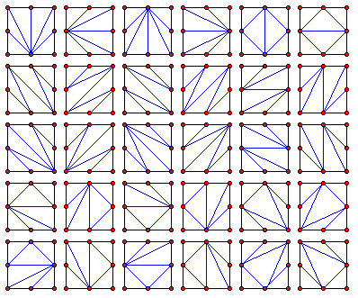

A square piece of paper with integer dimensions $N \times N$ is placed with a corner at the origin and two of its sides along the $x$- and $y$-axes. Then, we cut it up respecting the following rules:
Counting any reflections or rotations as distinct, we call $C(N)$ the number of ways to cut an $N \times N$ square. For example, $C(1) = 2$ and $C(2) = 30$ (shown below).

What is $C(30) \bmod 10^8$?
solve(n=1) → ?solve(n=30) → ?solve(n=50) → ?